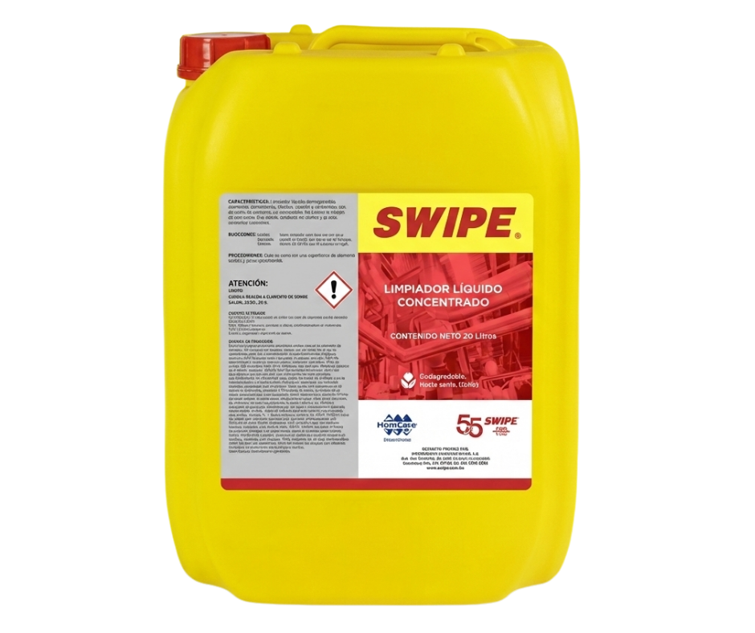

Una mezcla común puede resultar fatal. La HDS de SWIPE lo confirma: incompatible con hipoclorito de sodio.
Responsabilidades compartidas en el manejo seguro de sustancias químicas.
El Sistema Globalmente Armonizado (SGA) homologa la clasificación y etiquetado de productos químicos a nivel internacional. SWIPE se comercializa en más de 25 países; sus pictogramas y frases de seguridad son idénticos en todos ellos.
Indicadores visuales rápidos sobre el nivel de peligro de la sustancia.
Se utiliza para indicar las categorías de peligro más graves. Requiere acción inmediata y precauciones estrictas.
Ejemplo: Ácido sulfúrico concentrado, solventes inflamables de alta toxicidad.
Se utiliza para las categorías de peligro menos graves. Precauciones normales de higiene industrial.
Ejemplo: SWIPE Concentrado — puede causar leve irritación ocular y ligero desengrase de la piel (HDS Sección 11).
Describen la naturaleza de los peligros de una sustancia química (físicos, a la salud o al medio ambiente) y el grado de peligro.
Recomiendan medidas para minimizar o prevenir los efectos adversos causados por la exposición o el almacenamiento incorrecto.
La HDS de SWIPE tiene 16 secciones. En emergencias, estas 4 son vitales.
Ojos: lavar con agua abundante. Piel: retirar y lavar. Ingestión: consultar médico. Inhalación: aire fresco.
Contener con material absorbente no combustible. No permitir contacto con suelo o canales de agua.
Guardar entre 3°C y 40°C. Lejos del calor. Recipiente hermético y etiquetado. Fuera del alcance de niños.
Gafas protectoras. Guantes para uso prolongado. No requiere protección respiratoria ni cutánea especial.

Derrame accidental de 10 L de SWIPE Concentrado en el cuarto de máquinas. El producto es alcalino (pH 12-14) y puede contaminar canales de agua.
Consulta la Sección 6 de la HDS y elige las acciones correctas de contención y limpieza. Tienes 2 minutos.
Lee la etiqueta y la HDS antes de usar cualquier químico. SWIPE tiene pH 12–14: alcalino, no inflamable, pero incompatible con el cloro. Conocer esto previene accidentes.
La Sección 8 de la HDS de SWIPE es clara: gafas protectoras siempre y guantes para contacto prolongado. El EPP correcto marca la diferencia entre un susto y una lesión.
SWIPE + hipoclorito de sodio = reacción peligrosa (Sección 10 HDS). Antes de combinar cualquier producto de limpieza, verifica la compatibilidad en la HDS. Siempre.